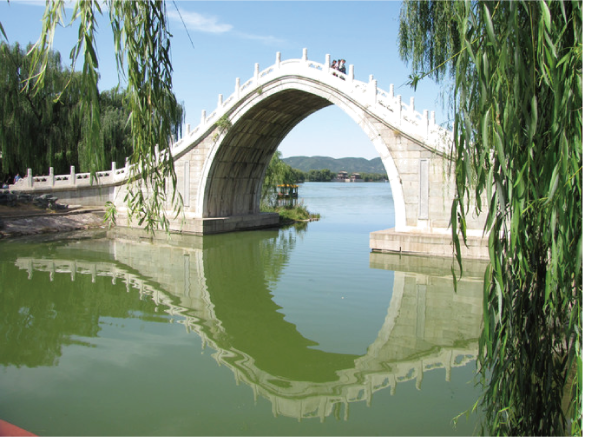
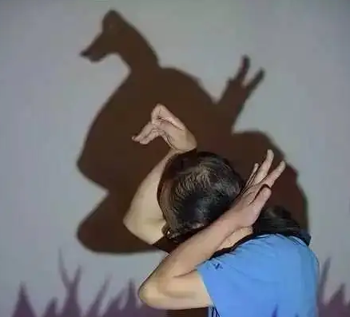
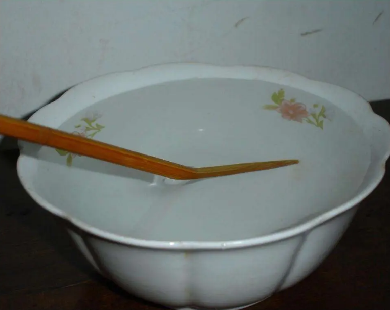
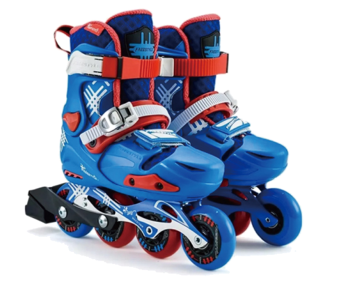
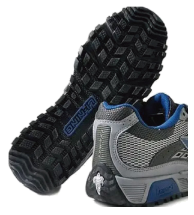
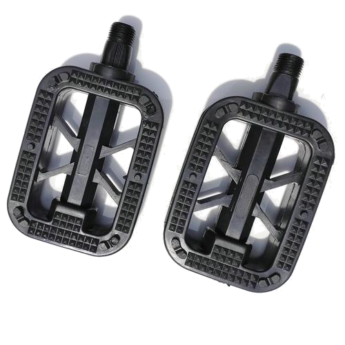
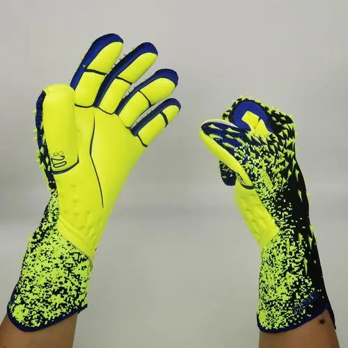
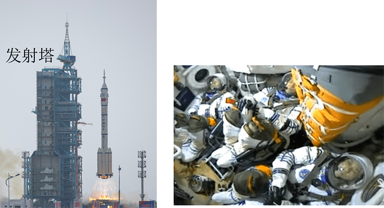

2023年北京市中考物理试题 · 选择题 第1、2、3、4、5题 · 对应解析
1. 下列物品通常情况下属于导体的是（ ）
A. 纸杯B. 瓷碗C. 铁锅D. 木铲
【答案】C
【解析】
【详解】纸杯、瓷碗、木铲都不容易导电，是绝缘体；铁锅容易导电，是导体，故C符合题意，ABD不符合题意。
故选C。
2. 如图所示的光现象，由于光的反射形成的是（ ）
A.

桥在水中形成倒影B.

墙上呈现人的影子C.

筷子好像在水面处弯折D. 放大镜把字放大
【答案】A
【解析】
【详解】A．桥在水中形成倒影，属于平面镜成像现象，是由光的反射形成的，故A符合题意；
B．墙上呈现人的影子，是由于光的直线传播形成的，故B不符合题意；
C．筷子好像在水面处弯折，是由于光的折射形成的，故C不符合题意；
D．放大镜是凸透镜，凸透镜成像成像是由光 折射形成的，故D不符合题意。
折射形成的，故D不符合题意。
故选A。
3. 如图所示的实例，目的是为了减小摩擦的是（ ）
A.

轮滑鞋装有滚轮B.
运动鞋底有凹凸的花纹C.

脚蹬面做得凹凸不平D.
守门员戴着防滑手套【答案】A
【解析】
【详解】A．轮滑鞋装有滚轮，用滚动代替滑动，减小了摩擦，故A符合题意；
B．运动鞋底有凹凸的花纹，使鞋底与地面间变得更粗糙，增大了摩擦力，故B不符合题意；
C．脚蹬面做得凹凸不平，使鞋底与踏板间变得更粗糙，增大了摩擦力，故C不符合题意；
D．守门员戴着防滑手套，使手与足球之间变得更粗糙，增大了摩擦力，故D不符合题意。
故选A。
4. 2023年5月30日，搭载神舟十六号载人飞船的长征二号F遥十六运载火箭，在酒泉卫星发射中心成功发射。图中所示的是火箭上升和此过程中航天员在舱内的情境，下列说法正确的是（ ）

A. 以地面为参照物，发射塔是运动的
B. 以发射塔为参照物，火箭是静止的
C. 以舱内的航天员为参照物，火箭是静止的
D. 以舱内的航天员为参照物，发射塔是静止的
【答案】C
【解析】
【详解】A．以地面为参照物，发射塔的位置不变，是静止的，故A错误；
B．以发射塔为参照物，火箭的位置不断变化，是运动的，故B错误；
C．以舱内的航天员为参照物，火箭位置不变，是静止的，故C正确；
D．以舱内的航天员为参照物，发射塔位置不断变化，是运动的，故D错误。
故选C。
5. 将某种金属制成的勺放入15℃的水中，金属勺没有熔化；将该金属勺放入45℃的水中，发现金属勺逐渐熔化。该金属的熔点可能是（ ）
A. 10℃B. 30℃C. 50℃D. 60℃
【答案】B
【解析】
【详解】金属属于晶体，其温度达到熔点并且继续吸热时，金属就会融化。根据题目表述此金属的熔点在15℃到45℃之间，故B符合题意，ACD不符合题意。
故选B。